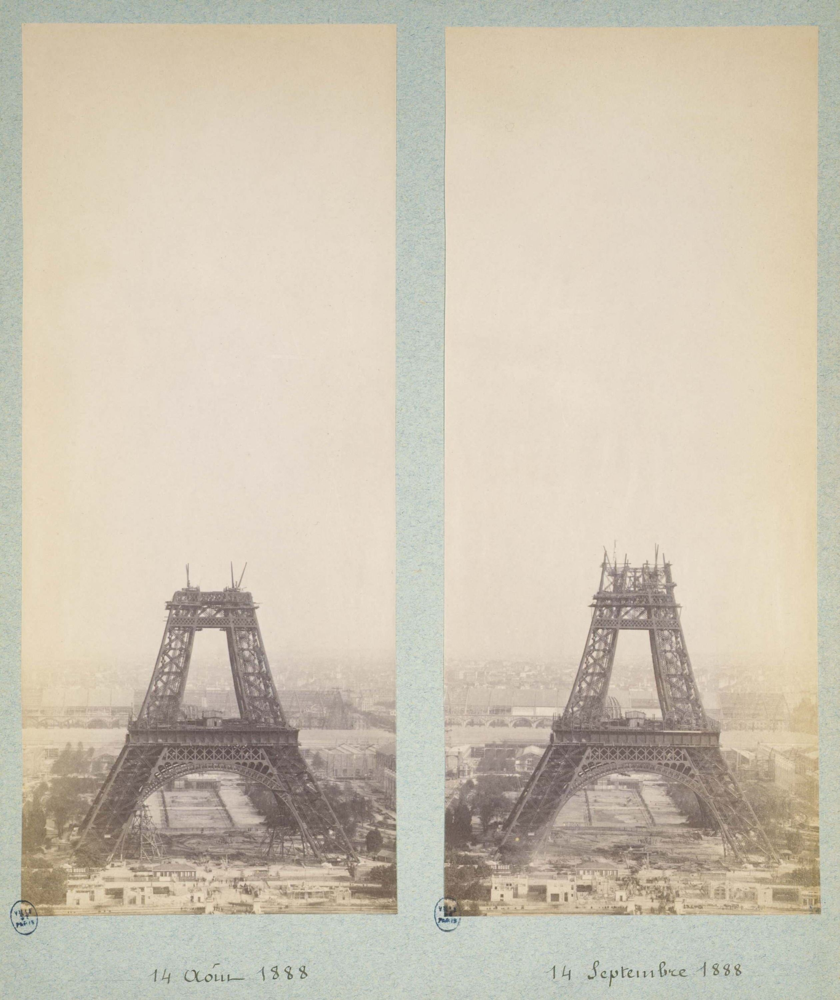
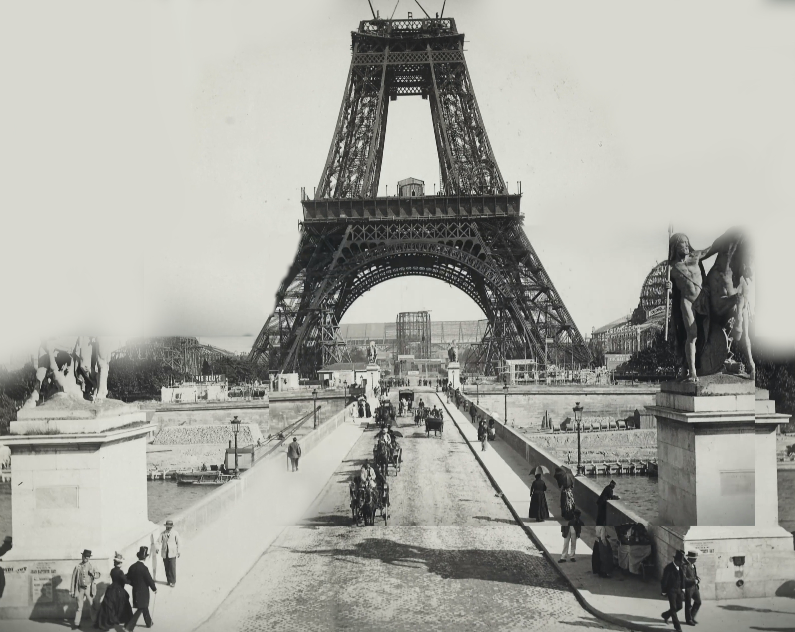

Gustave Eiffel became interested in the project and supported it. The design was eventually accepted, and Eiffel’s company received the responsibility for constructing the tower. Because of his important role in the project, the structure later became known as the Eiffel Tower. Construction began in January 1887. Building such a large iron structure required careful planning and great accuracy. Thousands of iron parts were manufactured separately and then assembled at the construction site. The workers had to make sure that every part was placed correctly so that the enormous structure would remain stable.


Completion of the Eiffel Tower
After a little more than two years of construction, the Eiffel Tower was completed in March 1889. It was ready in time for the World’s Fair, which opened in May. At approximately 300 meters tall, the tower was unlike anything people had seen before. It became the tallest structure in the world at the time and immediately attracted attention from visitors around the world.